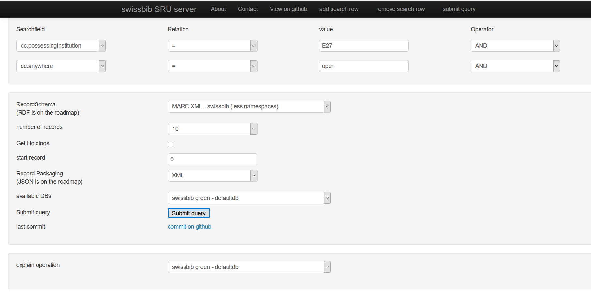

Zuerst ging es um die Transformation von Metadaten mit der Software OpenRefine. Diese eignet sich für die tabellarische Darstellung von Daten, dabei werden die Formate csv, tsv, xls und txt unterstützt. Weil OpenRefine Metadaten Zeile für Zeile abarbeitet, um diese tabellarisch darstellen zu können, funktioniert die Modellierung mit XML-Dateien, die keine starken Hierarchien haben am einfachsten, so z.B. MARCXML. Im Gegensatz dazu eignen sich stark hierarchische XML-Daten weniger, da diese zu stark verschachtelt sind (z.B. im EAD-Format).
OpenRefine dient der Exploration von Datenlieferung und hilft bei der Organisation von Daten, d.h. es unterstützt die Vereinheitlichung der Daten. OpenRefine lässt auch einen Abgleich mit Normdaten zu, indem die eigenen Metadaten mit diesen von Wikidata, GND und VIAF verglichen und u.U. ergänzt werden können.
Beispiel zu gesplitteten Zellen in OpenRefine (nach dem Tutorial von Library Carpentry):
Weiter ging es um die Schnittstellen SRU, OAI-PMH und Z39.50 und wie man diese nutzt. Z39.50 hatten wir bereits bei der Bibliothekssoftware Koha kennengelernt, wo uns dieser Server half, Katalogdaten in unseren Bestand zu importieren.
Die drei Übertragungsprotokolle aus dem Bibliotheks- und Archivbereich haben wir anhand von Aufgaben auch gleich ausprobiert. Mit dem Formular von swissbib haben wir eine Abfrage über den Bibliothekskatalog der FHGR gemacht. Die Aufgabe hatte mir persönlich etwas Mühe bereitet und ich konnte sie erst lösen, als mir andere gezeigt haben, was ich eingeben soll. Auch habe ich erst bei der Nachbereitung verstanden, wo ich den Bibliothekscode nachlesen kann:

Bei der Installation von VuFind auf der VM kam es zu einigen Problemen, so dass ich die Installation dreimal durchgeführt hatte. Zuerst war es mein Fehler, da ich etwas voreilig gehandelt habe, da dachte ich, ich sollte die Installation noch einmal von vorne beginnen. Als es wieder Fehlermeldungen gab, nutzte erstmal ein Update und später musste ich mit KILL irgendeinen Prozess stoppen (wie es im Webex-Chat einer Kollegin vorgeschlagen wurde, an den ganzen Befehl kann ich mich leider nicht mehr erinnern). Danach hat es auf jeden Fall geklappt.
Die Konfiguration verlief grundsätzlich ohne weitere Probleme, dennoch wird auf der Auto Configure-Seite angezeigt, dass Solr noch nicht funktioniert. Dies könnte daran liegen, dass ich Solr nicht auf der virtuellen Maschine installiert hatte. Die Gruppenaufgabe zur Konfiguration von VuFind, mit Hilfe des Tutorials von Herrn Lohmeier, konnte ich trotzdem ohne Probleme lösen. Dazu habe ich im Jitsi-Konferenz-Call meinen Bildschirm geteilt, so dass die restliche Gruppe sehen konnte, wie ich vorgegangen bin.
Dieser Block hat mir bisher am meisten Mühe bereitet, zuerst die Probleme mit der swissbib-Abfrage, wo ich anfangs nur die Hälfte verstand und dann die Installationsschwierigkeiten mit VuFind. Erst gegen Ende, zur letzten Gruppenarbeit, als ich dem Tutorial zur Konfiguration von VuFind folgen konnte, war ich wieder ganz dabei. Auch hat man wieder gemerkt, dass die Online-Vorlesung für diesen Kurs nicht ganz geeignet ist, da bei einigen Studierenden Probleme auftauchten, die irgendwie über Webex gelöst werden mussten. Schlussendlich hat es dann glücklicherweise doch noch geklappt.